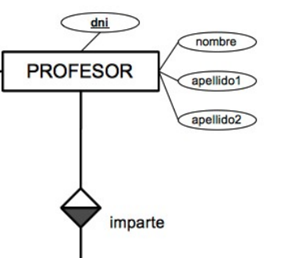

Introducció al E-R
Diagrama E-R
Un diagrama E-R (Entitat-Relació) és una eina gràfica utilitzada en disseny de bases de dades per representar de manera visual l’estructura de les dades i com es relacionen entre elles.
-
És un model conceptual que descriu:
- Entitats → objectes o conceptes (ex: Alumnes, Professors)
- Atributs → característiques de les entitats (ex: nom, edat)
- Relacions → com es connecten les entitats (ex: un alumne es matricula en un curs) 👉 Es representa amb formes:
- Rectangles → entitats
- El·lipses → atributs
- Diamants → relacions
Per a què serveix?
-
1. Dissenyar bases de dades
- Ajuda a definir què dades cal guardar abans de crear taules reals.
- És el pas previ a crear l’esquema SQL. 2. Entendre el sistema
- Permet veure ràpidament l’estructura de la informació.
- És útil per explicar el sistema a altres persones (equips, clients, estudiants). 3. Evitar errors de disseny
- Ajuda a detectar: duplicacions de dades , relacions incorrectes, mancances d’informació 4. Transformació a model relacional
- Es pot convertir fàcilment en: taules, claus primàries, claus foranes
Exemple senzill
Sistema acadèmic: Entitat: Alumnes , Entitat: Cursos , Relació: Matricula👉 Interpretació:
Un alumne pot matricular-se en diversos cursos, Un curs pot tenir diversos alumnes
Entitat

Una entitat és un objecte, concepte o “cosa” del món real sobre el qual volem emmagatzemar informació dins d’una base de dades.
Cada entitat té atributs, que són les dades que volem registrar sobre ella.
Una entitat pot ser independent o dependre d’altres entitats (relacions).
| Aspecte | Descripció |
| ----------------- | ------------------------------------------------------------------------------------------------------------------------------------------------------------------------------- |
| Representació E-R | Normalment es dibuixa amb un **rectangle** |
| Atributs | Columnes que descriuen propietats de l’entitat (ex: nom, edat, direcció) |
| Clau primària | Un atribut o combinació d’atributs que identifica **únicament cada instància** |
| Instància | Cada fila o registre concret d’una entitat és una **instància** (ex: “Anna” en la taula alumnes) |
| Tipus d’entitat | - **Entitat forta**: existeix de manera independent (ex: Alumnes, Empleats)
| Tipus d’entitat | - **Entitat dèbil**: depèn d’una altra entitat per existir (ex: Matricules depenent d’Alumnes) |
Exemple
- Entitat: Alumnes
- Atributs: id, nom, edat, curs
- Clau primària: id
Relació entre entitat i taula de BBDD
- Cada entitat correspon a una taula en una base de dades relacional.
- Els atributs de l’entitat corresponen a les columnes de la taula.
- Les relacions entre entitats (1:1, 1:N, N:M) indiquen com les entitats interactuen entre elles.